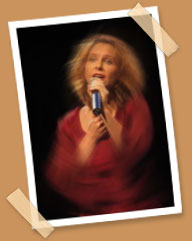

|  | |
| She combines the mildness of Anjou where she was born with the stronger character of Périgord where she now lives. By turns a singer and a comedian she also plays different instruments.Her motto on stage as well as in life: generosity, pleasure and commitment. |
|
| •
Is now performing in 4 shows : "Brassens, passionnément",
"Jazz Cabaret", "Songs & Humor Cabaret", "Cannelle
introduces Mary Poppins" (for children). |
|
|
|
|